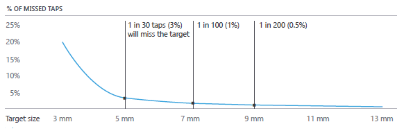
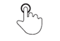
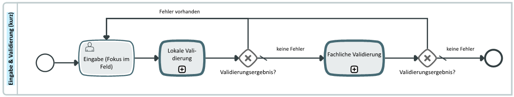
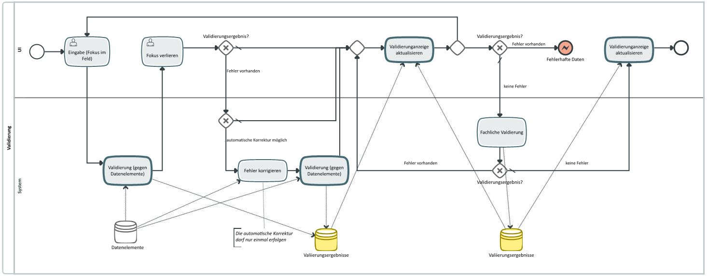
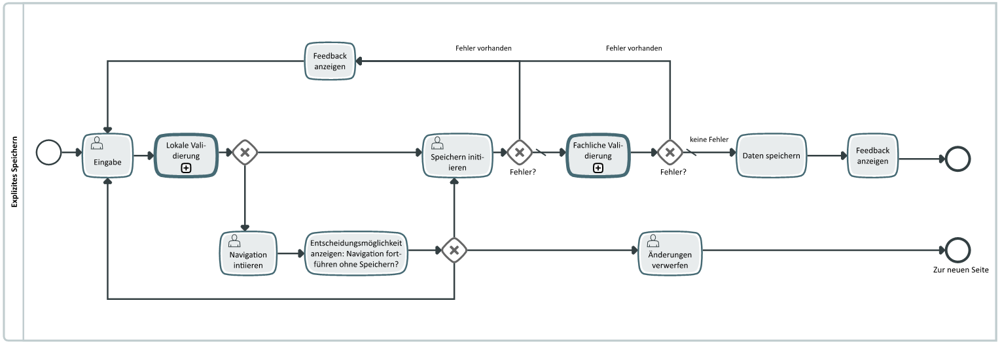

Konzepte moderner DATEV-Anwendungen und der Design DNA
Die hier beschriebenen Konzeptuellen Patterns machen in ihrer Kombination mit den Visuellen Patterns die DATEV-Design DNA aus. Der konsequente Einsatz in Produkt und Kommunikation ist ein MUSS und die Grundvoraussetzung
für deren Wirksamkeit.
Technische Basis für Webanwendungen ist HTML5 mit den Frameworks und Angular 2 und Bootstrap 3
Die Grundtechnologie für bestehende Produkte wird mit der Einführung der Design DNA nicht infrage gestellt,
daher gibt es bei der Umsetzung der einzelnen Merkmale Einschränkungen auf unterschiedlichen Technologien.
Die DATEV-Experience
Werte, Prinzipien und Merkmale für eine markenorientierte Designstrategie und eine ganzheitliche, konsistente
und eigenständige DATEV-User Experience
DATEV-UX-Prinzipien
Anwendungen der DATEV sollen folgende Prinzipien repräsentieren:
Alles da und trotzdem einfach
Der Anwender hat bei DATEV-Software das Gefühl der Sicherheit, alle benötigten Funktionen und Informationen
zur Verfügung zu haben, jedoch sind diese nicht omnipräsent an der Oberfläche dargestellt. Die Oberflächen
sind klar und aufgeräumt gestaltet, so dass der Anwender auf einen Blick die wichtigsten Informationen
erkennen und bearbeiten kann. Kontextbezogene Funktionen werden dynamisch und punktuell eingesetzt, so
dass die Komplexität der Oberfläche, nicht aber die Komplexität der Anwendung, reduziert wird.
Mit professionellen Lösungen schnell zum Ziel
DATEV-Anwendungen sind professionell, sowohl aus fachlichen als auch aus gestalterischen Gesichtspunkten.
Sie überzeugen durch eine kontextbezogene und bedarfsgerechte Aufbereitung der Informationen, deren visuelle
Umsetzung von hoher handwerklicher Qualität zeugt.
Schon während der Konzeption stehen der Anwender, und die Bedürfnisse der unterschiedlichen Ziel- und Berufsgruppen.
im Mittelpunkt. Durch eine prozessorientierte Gestaltung und performante Umsetzung der DATEV-Anwendungen
kann der Nutzer effizient und zielführend seine Aufgaben erledigen. Er navigiert schnell und präzise
durch die Anwendungen und wird in seinem Arbeitsrhythmus optimal unterstützt.
Sicher und verlässlich
DATEV-Anwendungen vermitteln Sicherheit und Verlässlichkeit durch eine konsistente Umsetzung der Interaktionsmetaphern.
Stringente und gut durchdachte Konzepte zum Einsatz von Oberflächenpatterns, Grafiken und Icons ermöglichen
dem Anwender ein schnelles Zurechtfinden in den unterschiedlichen DATEV-Anwendungen.
Sicherheit wird nicht um jeden Preis erzwungen, vielmehr wird der Anwender durch geschickte ergonomische
Lösungen zu einer sicheren Nutzung der DATEV-Anwendungen motiviert, ohne ihn in seinem Workflow zu bremsen.
Software, die mit- und vordenkt
DATEV-Software unterstützt den Anwender durch zielgerichtete Informationen und kontextbezogene Funktionen,
die nutzbringend zum richtigen Zeitpunkt verfügbar sind. Der Anwender muss nicht langwierig suchen, sondern
bekommt passgenaue Unterstützung.
Der Anwender hat schnell Zugriffsmöglichkeiten auf benötigte Informationen aus dem aktuellen Kontext – auch
wenn diese , aus anderen Anwendungen stammen und alsoder eine kombinierte Sammlung Kombination von Informationen
aus unterschiedlichen Anwendungen sind. Software, die "mitdenkt", unterstützt den Nutzer aktiv, beispielsweise
durch intelligente Vorschlagslisten bei Suchen und Sammlungen.
Programmiert für Freunde
DATEV-Anwendungen vermitteln die partnerschaftliche Beziehung zwischen dem Unternehmen und seinen Mitgliedern
bzw. Anwendern. Die Ansprache ist eine freundliche, mit einem kleinen Augenzwinkern, um Nähe und Sympathie
zu vermitteln. Dies beginnt mit der Software, bezieht jedoch das gesamte DATEV-Ökosystem mit ein. Bei
jedem Berührungspunkt mit DATEV wird dem Anwender auf eine freundliche und zuvorkommende Art und Weise
begegnet. Die Tonalität ist hell, freundlich und ruhig, und durch emotionale Gestaltungselemente wird
der menschenorientierte Aspekt in der Oberflächengestaltung transportiert.
Somit wird eine emotionale Bindung angeregt und eine gute User Experience geschaffen. Die Gestaltung berücksichtigt
den Grundgedanken, dass die Software für alle Anwender gleichermaßen, nicht für einen bestimmten Kernbereich
entwickelt wird. Durch das Gestaltungskonzept "Design für Alle" werden zahlreiche Aspekte der Gebrauchstauglichkeit
einer Anwendung berücksichtigt.
Die freundliche Ansprache, kann zum Beispiel in Fehlermeldungen eingesetzt werden. Formulierungen wie "Leider
ist ein unbekannter Fehler aufgetreten." oder "Es tut uns leid, dass dieser unbekannte Fehler aufgetreten
ist." sind gut geeignet, um partnerschaftlich in Fehlersituationen zur reagieren. Zudem können Handlungsabfolgen
und Anleitungen einfach und sympathisch vermittelt werden ohne dabei die Sachlichkeit zu verlieren.
Software, die begeistert
Die Begeisterung für DATEV-Anwendungen entsteht aus der Summe aller UX-Prinzipien. Durch lebendige und erstklassige
Vorreiter kann Begeisterung und Neugierde geweckt werden, um so wegweisende Innovationen für neue Produktlösungen
aufzuzeigen. Die unterschiedlichen Zielgruppen, wie beispielsweise Mandanten, sollen durch passgenaue,
unverwechselbare und frische Produkte begeistert werden.
Insbesondere Online und mobil können neue Konzepte flexibel und offensiv für den sich wandelnden Markt gestaltet
werden.
Konzeptionelle Gestaltungsmerkmale der Design DNA
Gestaltungsmerkmale sind Stilelemente, die in ihrer Kombination die DATEV-Design DNA ausmachen. Der konsequente
Einsatz in Kommunikation und Produkt ist ein MUSS und die Grundvoraussetzung für deren Wirksamkeit. Die
Grundtechnologie der Produkte wird mit der Einführung der Design DNA nicht infrage gestellt, daher gibt
es bei der Umsetzung der einzelnen Merkmale Einschränkungen auf unterschiedlichen Technologien. Außerdem
gibt es in den unterschiedlichen Medien (z.B. datev.de, Printkommunikation) Gestaltungsfreiräume.
Reduktion aufs Wesentliche
Auf den Oberflächen wird nur das dargestellt, was der Nutzer gerade benötigt.
Die visuelle Erscheinungsform der UI Elemente wird auf ein benötigtes Minimum reduziert. Überflüssige Elemente wie komplexe
Rahmen werden entfernt.
Vereinfachung durch Entzerrung
Wo Informationen nicht weiter sinnvoll reduziert werden können, eine weitere Reduktion aber gewünscht ist, soll die Informationsdarbietung
entzerrt werden. Die Abläufe in der Software bilden die Prozesse der Nutzer ab und nur jeweils die sinnvollen
Informationen und Funktionen werden nacheinander angeboten. Typische Abläufe gehen von Übersichtsseiten
zu Detail- und Bearbeitungsmasken.
Schrittweise Erhöhung der Informationsdichte
Den Anwendungsfällen der Nutzer folgend werden nach und nach mehr Informationen dargestellt, wenn dies die Effizienz der
Benutzung steigert.
Funktionalitäten mit werden entsprechend ihrer Nutzungshäufigkeit und Wichtigkeit für den Nutzer priorisieert und unterschiedlich
zur Verfügung gestellt: Primäre und häufige Funktionen sind direkt am entsprechenden Inhalt im Zugriff,
weitergehende Funktionalitäten sind erst über einen weiteren Schritt oder im Hintergrund verfügbar.
Grundprinzipien moderner Anwendungen
Basis der Entwicklung von modernen Anwendungen
User Experience & Usability
Usability übersetzt man am besten mit Gebrauchstauglichkeit oder Benutzerfreundlichkeit.
Usability bezeichnet das Ausmaß, in dem ein Produkt, System oder Dienst durch bestimmte Benutzer
in einem bestimmten Anwendungskontext genutzt werden kann, um bestimmte Ziele effektiv, effizient
und zufriedenstellend zu erreichen.
Gute Usability wird in der Regel gar nicht explizit wahrgenommen, schlechte hingegen schon.
Wichtig ist Usability bei allen Produkten mit einer Schnittstelle zwischen Mensch und Technik bzw. zwischen
Mensch und Maschine. Ob Software, Websites, mobile Endgeräte, medizinische Geräte oder komplexe Anlagen
zur Maschinensteuerung im Beruf, sie alle profitieren von einer guten Gebrauchstauglichkeit.
User Experience erweitert den Begriff Usability um ästhetische und emotionale Faktoren
wie eine ansprechende, „begehrenswerte” Gestaltung, Aspekte der Vertrauensbildung oder Spaß bei der
Nutzung (Joy of use).
In der DATEV ist die User Experience über die UX-Prinzipien festgelegt. Diese
sind die Zielwerte jeder DATEV-Anwendung.
Lightweight first
Die Realisierung einer modernen Front-End-Anwendung erfolgt stets unter der Prämisse Lightweight-first . Dabei gelten im
Sinne einer leichtgewichtigen Oberflächenentwicklung primär folgende, übergeordnete Leitsätze:
Einfachheit
"Starte so einfach wie möglich": Anforderungen an das Front-End sollten stets auf Basis einer möglichst wenig
komplexen visuellen Darstellungsform realisiert werden. Dies gewährleistet eine robuste und gleichwohl
schnell umsetz- wie anpassbare Anwendungsoberfläche.
So können beispielsweise in der Praxis oftmals aufwändig entwickelte Grid Controls mit weitreichenden Funktionen
wie Gruppierungen, Sortierungen oder Spaltenkonfigurationen durch einfachere Oberflächenelemnte ersetzt
werden. Passend für den entsprechenden UseCase konzipierte Tabellen- oder Listendarstellungen ohne diese
übergreifenden Spezialfunktionen sind deutlich einfacher zu implementieren, ohne dass dabei Einbußen
im Benutzererlebnis hingenommen werden müssen.
Orientierung am Webstandard
"Setze auf Standards": Im Browser-Kontext sollte die Verwendung existierender Web Standards und Standardlösungen
immer als erste Option in der Umsetzung betrachtet werden. So ist zum Beispiel immer zu prüfen, ob anstatt
eines aufwändig eigenhändig entwickelten Eingabe-Controls nicht etwa native HTML5 <input>-Attribute
die identische oder annähernde Funktionalität abbilden können.
Orientierung am Framework
"Arbeite niemals gegen dein technisches Rahmenwerk": Es sollte stets im Einklang mit den technischen Prinzipien der verwendeten
Bibliotheken und Frameworks entwickelt und deren Kernkonzepte nicht durch inkompatiblen Programmcode
außer Kraft gesetzt werden. Im Umgang mit Bootstrap als Oberflächen-Bibliothek bedeutet dies beispielsweise
die Nutzung der integrierten Theming-Option statt des willkürlichen Überschreibens von CSS-Selektoren
des Bootstrap-Stylesheets. Im Kontext von Angular 2 dagegen muss zum Beispiel stets dessen grundsätzliche
Komponentenorientierung berücksichtigt werden.
Wirtschaftlichkeit
"Stößt du an Grenzen, erwäge die Betriebswirtschaftlichkeit einer komplexen Umsetzung": Reichen für die Umsetzung bestimmter
Use Cases die geltenden Prinzipien auch nach praktischer Erprobung nicht aus, um eine angemessenen Funktionsumfang
und Usability zu gewährleisten, muss die Wirtschaftlichkeit einer Speziallösung überprüft und darf nicht
"um jeden Preis" erzwungen werden. So kann der Einsatz einer Fremdkomponente situationsbezogen den zeitlichen
Aufwand zur Umsetzung eines konkreten Features deutlich verringern, wie wenn die entsprechende Funktionalität
eigenhändig "von Grund auf" neu entwickelt werden würde. Im Gegenzug dazu kann ein aus Kundensicht wichtiges
Feature auch aufwändiger selbst umgesetzt werden, wenn hierdurch der Gesamtwert der Anwendung signifikant
gesteigert wird.
Bewusste Entscheidungen
"Entscheide Dich bewusst für die Lösung": Die Entscheidung für eine aufwändigere Lösung Speziallösung im Sinne der Usability
darf immer nur im klaren Bewusstsein der daraus potenziell resultierenden Auswirkungen / Risiken auf
die weitere Entwicklung der Anwendung getroffen werden. So steigen für komplexe Programmteile Fehleranfälligkeit
und Wartungsaufwand deutlich an, während sich gleichzeitig deren Flexibilität verringert. Entscheidungen
für aufwändigere Lösungen müssen daher bezüglich ihrer Wirtschaftlichkeit betrachtet werden.
Accessibility
"The power of the Web is in its universality. Access by everyone regardless of disability is an essential
aspect."
Tim Berners-Lee, W3C Director and inventor of the World Wide Web
Typische Barrieren
Schlechter Farbkontrast
Mangelhafte Bedienbarkeit mit Tastatur
Zu kurze Timeouts
Fehlende Semantik
Intellektuelle Überforderung
Gestaltungsprinzipien
Wahrnehmbarkeit
Bedienbarkeit
Verständlichkeit
Robustheit
Prinzip 1: Wahrnehmbar
Informationen und Bestandteile der Benutzerschnittstelle müssen den Benutzern so präsentiert werden, dass
diese sie wahrnehmen können.
Alle Nicht-Text-Inhalte (Grafische Elemente) sind mit einer Textalternative versehen
Es stehen Untertitel für Audio- und Videodateien („zeitbasierte Medien“) zur Verfügung
Anpassbare Inhalte ermöglichen unterschiedliche Darstellungsarten, ohne dass Information und Struktur
verloren geht (z.B. einfacheres Layout)
Gute Wahrnehmbarkeit des Inhalts und Unterscheidbarkeit von Vorder- und Hintergrund (z. B. Kontraste,
Farben, Schriftgrößen)
Prinzip 2: Bedienbar
Alle Bestandteile der Benutzerschnittstelle und Navigation müssen bedienbar sein.
Durchgängige Bedienbarkeit mit Tastatur
Ausreichend Zeit gewähren (z.B. bei Zeitlimits; anhalten, beenden und ausblenden beweglicher oder aktualisierender
Information ermöglichen)
Das Design verursacht keine epileptischen Anfälle (Häufigkeit des Aufblitzens von Inhalten maximal 3x
pro Sekunde)
Es werden Navigationshilfen angeboten, z.B. Umgehungsmöglichkeiten für wiederholende Elemente; Titel
beschreiben Thema und Zweck der Seite/eines Links; Informationen über Position (Fokus) innerhalb
der Webseite
Prinzip 3: Verständlich
Informationen und Bedienung der Benutzerschnittstelle müssen verständlich sein.
Inhalt muss lesbar und verständlich sein (Einfache Sprache, auch durch Programme erkennbar)
Die Webseite muss vorhersehbar aussehen und funktionieren (z.B. Fokusänderung ändert nicht unerwartet
Inhalt der Seite; Einheitlichkeit wiederholender Navigation; Elemente mit gleicher Funktionalität
einheitlich bezeichnen)
Es werden Hilfen bei der Eingabe geboten (Beschriftungen, Anweisungen, Fehlererkennung mit Beschreibung
für Benutzer)
Prinzip 4: Robust
Inhalte müssen robust genug sein, damit sie zuverlässig von einer großen Auswahl an Benutzeragenten einschließlich
assistierender Techniken interpretiert werden können.
Die Kompatibilität mit Browsern („Benutzeragenten“) und Hilfsmitteln („Assistiven Technologien“) soll
maximiert sein; Setzt korrekte Semantik voraus entsprechend der Spezifikation der verwendeten Programmiersprache
Integration
Für eine Accessibility Integration sind folgende Punkte notwendig:
Konzeptionelle Überlegungen (z. B. »Welcher Aufbau unterstützt die Navigation mit Bedienhilfen?«)
Design (z. B. »Sind die Kontrastwerte der Bedienelemente und Schriften stark genug?«)
Entwicklung: (z. B. »Sind sinnvolle, beschreibende Infotexte für Bedienelemente hinterlegt ?«) --> Semantik
Testing (z. B. »Wurde die App ausreichend mit blinden und sehbehinderten Nutzern getestet?«)
Universal Design
Universelles Design ist Barrierefreiheit aus der Sicht von Produktentwicklern
Universelle Usability
Anpassungsfähigkeit, z.B. Einstellbarkeit von Schriftgrößen und Farbkontrasten für den Ausgleich einer
Sehbehinderung
Schnittstellen für technische Hilfen, Ein barrierefreies Produkt hat Schnittstellen für den Anschluss
assistierender Geräte, z. B. Screenreader oder Braille-Zeile
Quelle: Was bringen uns barrierefreie Apps? VON STEFAN SCHUHMANN
Lightweight First?
Welche Fälle/Features umgesetzt werden muss eine bewusste Entscheidung sein unter Berücksichtigung welche
Konsequenzen daraus entstehen (Betriebswirtschaftliche Aspekte, etc.)
Die Gestaltung und Realisierung von webbasierten Benutzeroberflächen erfolgt nach den Prinzipien des Responsive Design. Im
Zentrum steht dabei die stete Gewährleistung einer kontextgerechten Aufbereitung von Bedienelementen
und Datendarstellung durch Techniken wie flexible Layoutgrid-Systeme und CSS Media Queries. Insbesondere
aufgrund der endlosen Vielfalt an unterschiedlichen mobilen Endgeräten ist diese Vorgehensweise für moderne
Webanwendungen alternativlos. Responsive Design muss von Beginn an als Grundmanifest der UI-Entwicklung
verstanden und umgesetzt werden, da eine nachträgliche oder willkürliche Implementierung von Adaptivität
/ Responsivität für bereits bestehende statische Oberflächen nur unter teils erheblichem Mehraufwand
vorgenommen werden kann. Fortgeschrittene Kenntnisse in HTML und CSS sind dafür unabdingbar. Responsive
Design steht ebenso in direktem Zusammenhang mit Lightweight-First. Wird beispielsweise für eine gezielte
Layout-Sollbruchstelle die Änderung eines gesamten Bedienparadigmas definiert, so entspricht dies nicht
mehr dem Mantra einer leichtgewichtigen Konzeption und bedarf einer genauen Prüfung.
In der Online-Welt ist die asynchrone Verarbeitung von Aktionen de facto Standard. Daher ist es umso wichtiger bei der Entwicklung
von Modern Apps damit umzugehen.
Besonders wichtig sind Szenarien, wie das Datenladen/-speichern vom/am Server. Zu beachten ist das Verhalten der Anwendung,
so dass dem Benutzer Möglichkeiten zur Interaktion bleiben, bzw. der Benutzer Feedback bekommt, welche
Aktionen aktuell laufen und wie dessen Fortschritt ist.
Genauere Konzepte zur Behandlung von Asychronität werden in den Kapiteln "Laden" und "Speichern" vorgestellt.
Komponentenorientiertheit
todo!
Touch-Bedienbarkeit
Systeme, die mit Touch bedienbar sind haben andere Anforderungen an die Bedienoberfläche als herkömmliche Systeme mit Maus
und Tastatur. Das betrifft unter anderem die Größe der Bedienelemente. Der Finger als Eingabemedium ist
im Gegensatz zur Maus deutlich größer und braucht daher auch eine größere Fläche um ein Ziel sicher treffen
zu können. Zudem kommen "natürliche" Interaktionen mit der Oberfläche wie durch Gesten. Eine Beschränkung
ist weiterhin dass der Hover-State der Maus standardmäßig nicht per Touch auslösbar ist.

Verfehlte Taps (in %) bezogen auf die Größe des Ziels | Quelle: Microsoft
Größe der Bedienelemente
Je größer das Bedienelement ist, desto sicherer wird es getroffen. Jedoch muss man die Größe des Elementes gegen den normalerweise
begrenzten Platz abwägen. Als Richtlinie wird meistens eine Größe zwischen 5 und 9 mm empfohlen. Für
die Bedienung per Touch ist die physikalische Größe der Bedienelemente wichtig,
da bei modernen Geräten die Pixeldichten variieren und daher kein verlässliches Maß mehr geben.
Wie groß ein Bedienelement sein sollte, hängt von verschiedenen Faktoren ab:
Häufigkeit der Nutzung
Konsequenz bei Fehlern (wie schnell/mit wie vielen Aktionen komme ich zum Ausgangzustand zurück?)
Position und umgebender Inhalt
…
Wichtig ist zudem der Abstand (Padding) zwischen Bedienelementen. Dieser sollte mindestens 2 mm betragen.
7x7 mm: Empfohlene Mindestgröße
Gute Größe für normal häufig benutzte Bedienflächen und wenn Fehler schnell behoben werden können.
9x9 mm: Für genaues Arbeiten
Wenn eine Aktion häufig ausgeführt wird oder die Zielaktion weitreichende Konsequenzen hat (z.B. Löschen),
ist eine Größe von 9x9 mm empfehlenswert.
5x5 mm: Bei Platzmangel
Ist wenig Platz vorhanden, kann die Größe bis auf 5x5 mm sinken. Eine versehentliche Berührung des Bedienelementes
sollte aber schnell zu korrigieren sein, wenn versehentlich berührt wird. Hier ist das Padding besonders
wichtig.
Größe des sichtbaren Bedienelementes
Die Bedienfläche eines Controls muss nicht unbedingt zu 100% sichtbar sein; jedoch sollte mindestens 60%
der Bedienfläche gefüllt sein. Zusätzlich ist das Padding zu berücksichtigen.
Die Standard-Gesten der (Multi-)Touch-Bedienung müssen in den Anwendungen unterstützt werden. Zudem können
etablierte Gesten-Patterns wie z.B. das Herein-Swipen des Navigation-Drawers verwendet werden.

Tap
Kurzes Antippen eines Elements
Eine Aktion ausführen, Auswahl z. B. Öffnen einer Anwendung oder Tap auf ein Control, um den Inhalt
zu bearbeiten
Drag
Streifen über das Display
Ziehen und Verschieben von Elementen, langsames Scrollen
Flick
Schnelles Wischen über das Display
Schnelles Scrollen, Wechseln der Ansicht
Swipe
Kurze Wischbewegung
Lässt in Tabellen-Ansichten den Löschen-Button erscheinen, Öffnen des Navigation-Drawers
Double tap
Kurzes doppeltes Antippen eines Elements
Herein- und Herauszoomen, Fullscreen - normale Ansicht
Pinch open
Zwei Finger auseinanderbewegen
Heranzoomen, z. B. bei Dokumenten
Pinch close
Zwei Finger zusammenführen
Herauszoomen, z. B. bei Dokumenten
Touch and hold
Langes Antippen eines Elements
Vergrößerte Darstellung bei Texteingaben für die Cursor-Position
Zoom
Generell soll im Content-Bereich eine Zoomfunktion angeboten werden, sofern dies dem Anwender einen Mehrwert
bietet. Dies ist zum Beispiel bei Dokumenten der Fall. Beim Zoom ist zu beachten, dass der Content vergrößert
wird, jedoch keine Bedienelemente und Icons. Beim Zoomen kommen die Gesten "Pinch open " zum Vergrößern
und "Pinch close " zum Verkleinern zum Einsatz
Scrollen
Sobald der Inhalt einer Anwendung größer als der Screen ist, erscheint eine Scrollbar. Es kann mit den Gesten
"Drag" und "Flick" gescrollt werden.
Eigene Gesten zu entwicklen empfiehlt sich nicht. Diese dürfen nur nach rigorosem Nutzertest mit erfolgreichem
Feedback verwendet werden.
Jede Berührung wird vom System als Eingabe erkannt. Daher sollten Eingaben nicht sofort bei der Berührung
des Touchscreen verarbeitet werden, sondern erst, wenn der Anwender den Finger wieder vom Bildschirm
nimmt. Die aktuelle Position kann durch Wischen über den Bildschirm verändert und dadurch die Interaktion
abgebrochen werden.
Da auf der großen Mehrzahl der Touchgeräte kein Hover-State erkannt wird, darf dieser Zustand nicht der alleinige
Trigger für Interaktionen sein. Zulässig wäre aber eine Auslösung der Interaktion sowohl durch Hover
als auch durch Klick/Tab.
Während des Kontakts mit einer interaktiven Fläche auf der Oberfläche muss ein visuelles Feedback gegeben
werden. Das visuelle Feedback sollte dabei so erscheinen, dass es von der Hand/dem Finger nicht verdeckt
wird. Für Maus-Nutzer ist das Feedback auf Hover ebenso relevant, daher ist die ideale Lösung eine zweistufige
Feedback-Darstellung, die sowohl den hover- als auch (in anderer Form) den active-State visualisiert.
Bei dem Ausfüllen von Formularen auf mobilen Geräten ist zu beachten, dass hier auch mit einer On-Screen-Tastatur
gearbeitet wird. Hierbei ist wichtig, dass sowohl das aktive Eingabefeld als auch sein Label bei geöffneter
Tastatur zu sehen sein muss. Zudem sollte auch das folgende Eingabefeld sichtbar sein, damit ein Wechsel
dorthin ohne das Schließen der Tastatur möglich ist. Um dies zu erreichen müssen die Abstände nah genug
sein - jedoch nicht so nah, dass eine fehlerfreie Bedienung nicht mehr möglich ist.
Patterns
Best practices und Vorgaben
Navigation
In einer modernen (Web-)Anwendung sind alle Seiten über einen eindeutigen DeepLink erreichbar.
Die grundlegenden Navigationskonzepte sind:
Navigation im Kontext innerhalb des Contents
Navigation im Header (und Footer)
Navigation über die Schublade
Navigation im Kontext
Die Navigation in Anwendungen muss auf Grund des Komponentenkonzepts vollständig innerhalb des Contents funktionieren können. Die wichtigsten Funktionen und Absprungpunkte des aktuellen Kontextes sollten dabei
direkt und offensichtlich verfügbar sein.
Um weiterhin überblickbare Oberflächen (Reduktion)
zu gewährleisten, müssen Prozesse und Inhalte gegebenenfalls entzerrt (Entzerrung)
werden.
Typische Controls zur Navigation innerhalb des Contents sind:
Weniger wichtige Punkte können in --> (Overflow-)Menüs als PopUp verfügbar gemacht werden.
Tabs
Tabs erlauben das Springen zwischen mehreren parallelen Kontexten. Tabs können immer als vertiefende Navigation
innerhalb einer Seite verwendet werden.
Als primäre Navigation einer Anwendung können Tabs eingesetzt werden, solange nicht zu viele parallele Ebenen
vorliegen. Zudem sollte die gleiche Navigation dann nicht über die Schublade abgebildet sein. Prozessschritte
sollten nicht über Tabs abgebildet werden.
Navigation im Header
Im Header können übergreifende Absprungpunkte, die immer verfügbar sein sollen, erscheinen, wie zum Beispiel
der Absprung zur Hilfe oder eine Suchzeile. Zusätzlich kann eine --> Breadcrumb eingebunden werden, die
den hierarchischen Pfad der aktuellen Seite anzeigt und Absprünge in darüberliegende Seiten erlaubt.
Sofern es einen Footer gibt, können hier Absprungpunkte zu sekundären Inhalten angeboten werden. Beispiel:
Impressum.
Navigation über die "Schublade "
Die Schublade dient der "infrequent navigation " und enthält eine Sammlung von Absprungpunkten, die vor allem
dem schnellen Springen zu weit entfernten Programmteilen ermöglicht. Die Navigationsstrukturen in der
Schublade sollten über die Anwendung hinweg stabil bleiben, um eine einfache Orientierung zu gewährleisten.
Typische Controls zur Navigation innerhalb der Schublade sind:
Die Inhalte müssen redaktionell gepflegt werden, d.h. sie können eine Auswahl aus den verfügbaren Absprüngen
darstellen. Bei komplexen Informationsarchitekturen muss zum Beispiel nicht jede Ebene abgebildet werden.
Browser-Spezifika
Zusätzlich kommen über den Browser noch weitere Navigationsarten hinzu:
DeepLink via URL
Zurück/Vorwärts-Button des Browsers ( Browserhistorie)
Ablaufsteuerung
Schließen des Browsers
Refresh (F5)
Prozesse aus technischer Sicht
Die Navigation teilt sich in die Subprozesse "Seite verlassen" und "Seite erreichen".

Prozess "Eingabe und Validierung (kurz)"

Prozess "Validierung"
Speichern (Implizit/Explizit)

Prozess "Speichern"
Liste vs. Tabelle
Listen
Listen dienen der Auflistung von gleichartigen Datensätzen. Listen können von einfachen Aufzählungen bis
zu komplexen Darstellungen mit einer Vielzahl von Informationen pro Datensatz reichen. Listeneinträge
sind gleichartig aufgebaut und gestaltet, sodass eine Vergleichbarkeit gewährleistet ist. Die verschiedenen
Daten eines Datensatzes können diverse Medientypen beinhalten und unterschiedlich dargestellt werden
- z.B. können wichtige Daten hervorgehoben werden. Listen sind in der Regel nach dem wichtigsten oder
sinnvollsten Datentyp sortiert, z.B. chronologisch.
Responsiveness
Die Darstellung von Listen kann und sollte sich mit der Größe des Viewports verändern, um alle Informationen
adäquat anzuzeigen.
Listen können folgende Operationen featuren:
Auswahl eines oder mehrerer Einträge
Suche nach Einträgen
Sortierung nach verschiedenen Kriterien, d.h. die Reihenfolge wird angepasst
Filterung nach verschiedenen Kriterien, d.h. nur bestimmte Einträge werden angezeigt
In modernen Webanwendungen werden diese Operationen insbesondere bei großen Datenmengen serverseitig durchgeführt.
Umgang mit großen Datenmengen
Bei einer großen Anzahl von Datensätzen dürfen diese nicht alle an den Client ausgeliefert werden. Es werden
nur die Daten geladen, die der Nutzer aktuell benötigt (sieht) bzw. in der direkten Zukunft verwenden
wird. Weitere Daten werden dynamisch nachgeladen.
Kein Feature einer Liste ist:
Ein- und Ausblenden von bestimmten Daten der Datensätze
Anwendungsszenarien
Neben der reinen Auflistung von Daten dienen Listen auch häufig als inhaltsgetriebene Navigation: die einzelnen
Listeneinträge sind Absprungpunkte in Detailansichten oder Bearbeitung des Datensatzes. Der Absprung
kann dabei auf eine neue Seite führen oder nach dem Master-Detail-Pattern erfolgen (d.h. Liste und Detailansicht
sind auf einer Seite zu sehen).
Gestaltung
Listen können sehr verschieden gestaltet sein. Wichtig ist dabei vor allem die Gleichförmigkeit von Item
zu Item und deren eindeutige Abtrennung.
Tabellen dienen zur vergleichenden Darstellung von mehrdimensionalen Datensätzen. Jeder Datensatz wird in
einer Zeile über mehrere Spalten hinweg angezeigt. Die Größe einer Zelle und damit seiner Inhalte ist
begrenzt, insbesondere durch die Höhe der Zeile. Häufig werden standardisierte Darstellungsformen verwendet,
um die Lesbarkeit zu verbessern und Vergleichbarkeit über mehrere Tabellen hinweg zu ermöglichen - ein
Beispiel hierfür ist die BWA.
Responsiveness
Die Darstellung von Tabellen kann sich an die Größe des Viewports nur begrenzt anpassen, es muss ggf. horizontal
gescrollt werden.
Tabellen können folgende Features haben:
Auswahl eines oder mehrerer Einträge
Suche
Filterung
Sortierung oder Mehrfachsortierung
Ein- und Ausblendung von Spalten
Veränderung der Anordnung von Spalten
Suche, Filterung und Sortierung werden in modernen Webanwendungen serverseitig durchgeführt.
Prinzipien
List-first
Für eine Auflistung von Datensätzen sollte, wenn möglich, immer die Listendarstellung gewählt werden. Diese
bietet eine individuelle und flexiblere Darstellung der Daten. Tabellen sollten nur verwendet werden,
wenn diese Darstellungsform eindeutige Vorteile bietet.
Gestaltungspflicht
"Listen brauchen Designer " - Listen müssen je nach Inhalt unterschiedlich und für jede Liste einzeln gestaltet
werden. Die angezeigten Daten müssen sorgfältig und für den UseCase entsprechend ausgewählt werden, da
ein Ein- und Ausblenden einzelner Daten in der Regel nicht möglich ist.
Responsive Item Design
Listen können und sollten sich an die Größe des Viewports anpassen. Das Umbrechen der Zeilen innerhalb eines
Listen-Items sowie die Veränderung von Größen ist dabei eine legitime Gestaltungsmethode. Standardmäßig
sollten auf allen Viewports die gleichen Daten eingezeigt werden. Daten auf Grund eines kleineren Viewports
auszublenden empfiehlt sich nur in seltenen Fällen.
Listenoperationen als Patterns
Listenoperationen wie Filtern, Suchen oder Sortieren folgen Patterns, die bei allen Listen wie auch bei Tabellen
konsistent eingesetzt werden.
Schnellerfassung
Erfassungen in Tabellen oder Listen sollten außerhalb stattfinden in einem Master-Detail-Pattern. Ein Beispiel
hierfür ist die Buchungszeile.
Zu beachten ist. dass die Schnellerfassung per Tastatur ist auf kleinen Bildschirmen bzw. in mobilen Szenarien
kein sinnvolles Szenario ist. Wenn möglich sollten die Daten auf anderen Wegen erfasst werden, z.B. per
Scan.